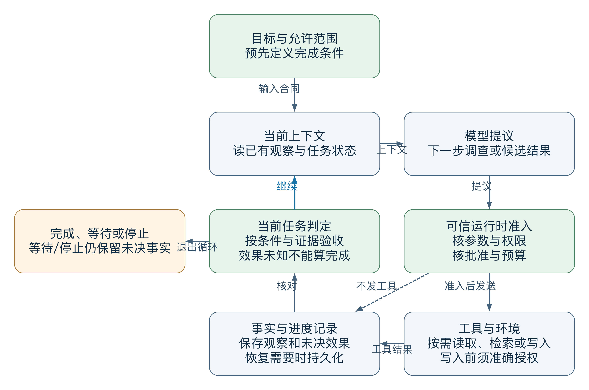
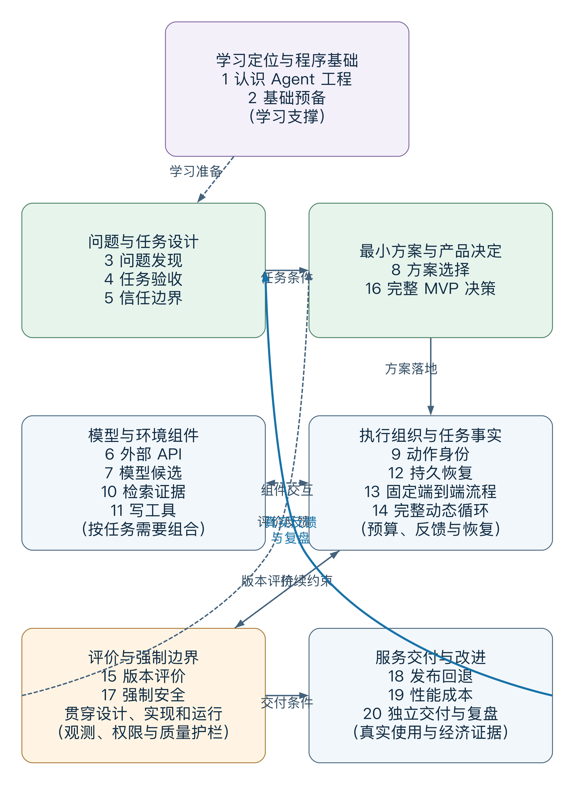

<!doctype html><html lang="zh"><meta charset="utf-8"><title>v10 QA preserved diagram preview</title><style>body{margin:24px;font-family:Arial,sans-serif;color:#172635;background:white}main{max-width:760px;margin:auto}img{display:block;width:100%;height:auto}p{font-size:16px}h2{font-size:20px}</style><main><p>QA 静态预览：内容最大宽度 760 CSS px。只读保留的前修 PNG，无脚本/外部资源。</p><h2>运行闭环（前修）</h2><h2>工程全景（前修）</h2></main></html>